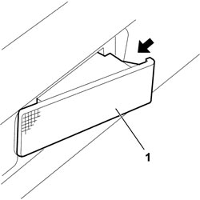
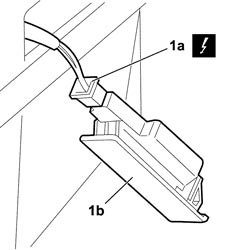

7040G46 <x>LOAD COMPARTMENT COURTESY LIGHT - R&R</x>
- Path
- Procedures > 70 FITTINGS > 7040 BODY INTERIOR FITTINGS AND TRIM > 7040G VEHICLE COMPARTMENT LIGHTING SYSTEM > 7040G46 <x>LOAD COMPARTMENT COURTESY LIGHT - R&R</x>
- Kind
- repair procedure (removal / refitting; the operation number is the code)
- Applies to
- all engines; all production periods
- Interactive page
- https://sloeber94.github.io/elrnDB-fCrm/en/#/194001061
Applies to: all engines; all production periods
 Removing
Removing
 Refitting
Refitting- Open the tailgate.
- Turn the ignition key to the OFF position.
- Disconnect the negative battery terminal.
Description | Connector | |
|---|---|---|
BATTERY |
1. Working in the direction of the arrow, release the retainers and extract the courtesy light for the load carrying compartment. The courtesy light is a press-fit.

Applies to: all engines; all production periods
1. Disconnect the electrical connection (1a) and remove the courtesy light for the load carrying compartment (1b).
Description | Connector | |
|---|---|---|
1a | RIGHT BOOT COURTESY LIGHT |
Description | Connector | |
|---|---|---|
1a | LEFT BOOT COURTESY LIGHT |

Applies to: all engines; all production periods
Refitting
Removing- Check that the courtesy light for the load carrying compartment is not damaged.
- Connect the electrical connection for the courtesy light for the load carrying compartment.
Description | Connector | |
|---|---|---|
RIGHT BOOT COURTESY LIGHT |
Description | Connector | |
|---|---|---|
LEFT BOOT COURTESY LIGHT |
- Fit the courtesy light in its housing attaching the retainers.
- Connect the negative battery terminal.
Description | Connector | |
|---|---|---|
BATTERY |
- Check that the courtesy light for the load carrying compartment is working properly.
Topics linked from this page (2)
Topics that link to this page (11)
- 5505C41 PASSENGER COMPARTMENT WIRING - R.R
- 5570T70 PAGER/COMPACT DISC WIRING HARNESS - R&R OR REPLACE
- 5570T95 SUBWOOFER WITH AMPLIFIER BUILT INTO SOUND SYSTEM - R.R.
- 5580H10 PARKING OBSTACLE DETECTION DEVICE ELECTRONIC CONTROL UNIT - R.R.
- 7040B18 LOAD COMPARTMENT LOAD PLATFORM SIDE TRIM ONE LH OR RH - R.R
- 7040B24 LOAD COMPARTMENT TOP TRIM (ONE) - R+R
- 7040G43 BULB FOR LOAD COMPARTMENT COURTESY LIGHT - R.R.
- 7040H42 REAR PILLAR TRIM (ONE), LEFT OR RIGHT- R.R
- 7065B08 REAR SEAT BELT (ONE) WITH PRETENSIONER ON REEL, LEFT OR RIGHT - R.R.
- 7210B82 R.R REAR CROSSMEMBER
- 7210E66 R.R. REAR BUMPER